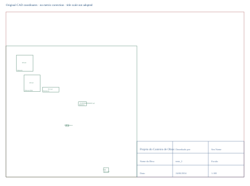
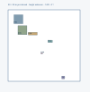

比例暂定 · 高度示意 · 0 处独立尺寸控制
仅重建场地边界和六设施足迹。80×80 米来自配套作者输入的暂定解释；原 CAD 边界为 220×220，INSUNITS=6 和静态 1:100 图签不能直接采用。面积文本与几何同源，不构成独立尺寸核验。
CAD XY → Three XZ，竖向 Y。X=(CAD_X−10)×80/220−40；Z=40−(CAD_Y−10)×80/220。原坐标、逆变换及源 handle 存在 JSON/GLB extras 中。
F01–F05 使用 2.8 米通用示意体块；F06 使用 0.12 米展示厚度的平面区域。所有 actualHeight=null，heightKnown=false。实际高度、建筑或开放区域类型、屋面门窗、材料、设备参数、地形、朝向均未知。
不包含永久主楼、道路、塔吊、地下管线、工序或进度。不能用于放样、工程量、施工或安全距离判断。来源许可证仍未独立核实；派生模型及二维对照已由维护者于 2026-10-21 确认公开展示。原始来源权利不因本次发布而改变；本软件的 MIT 协议不扩展授予这些材料的权利。
来源：作者固定版本 DXF · commit 9c9d90a5ef810f943d533461945decd18bc567e7
SHA-256: 70fe649f14c8891a2d7f961c6b867b467c01809fbe0e2fd0664fb3c977b91a40
模型 JSON · 米制 Y 向上 GLB · 来源清单

